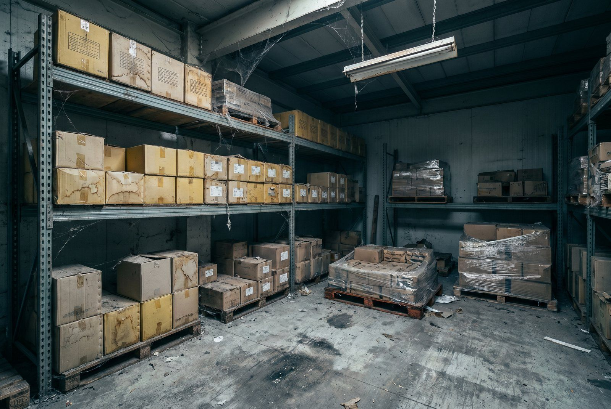

Dead stock er varer der bor på dit lager uden at bevæge sig. De optager plads, binder kapital og øger risikoen for tab, når de til sidst må nedskrives eller kasseres.
For de fleste webshops udgores 10-20% af lagerbeholdningen af varer der ikke har bevæget sig i over 90 dage. Det er sjaldent intentionelt. Det sker stille og roligt når man ikke har styr på sine data.
👉 Vil du kortlægge dit dead stock? Kontakt SmartPack
Hvad koster dead stock?
Dead stock har tre typer omkostninger:
1. Kapitalbinding
Penge bundet i varer er penge der ikke kan bruges til andet. Alternativomkostningen er typisk 8-12% per år (hvad kapitalen ellers kunne have afkastet). På 200.000 kr. dead stock er det 16.000-24.000 kr. om året i tabt afkast, uanset om varerne nogensinde saelges.
2. Lagerpladsomkostning
Dead stock optager plads der kunne bruges til bestsellere. Når en populaer vare ikke kan få en god plads fordi hylderne er fyldt med langsomt-sælgende varer, påvirker det plukkeeffektiviteten direkte.
Beregn din lagerpladsomkostning: månedlig husleje / totale lagringspositioner = kr. per position per måned. For mange lagre er det 50-200 kr./position/måned.
3. Nedskrivnings- og kassationsrisiko
Jo laengere en vare står, jo højere er risikoen for at den må sælges med tab, kasseres eller doneres. Mode ældnes. Elektronik forlaenges. Fødevarer udløber. Nedskrivning er en direkte regnskabsmæssig tab på topslinjen.
Sådan identificerer du dead stock
Den simpleste metode: sorter dit lager efter "sidst bevæget". Varer der ikke har bevæget sig i:
- 30-60 dage: Hold øje med dem. Ingen handling endnu.
- 60-90 dage: Undersøg årsagen. Er der et salgsmæssigt problem?
- 90-180 dage: Aktiv handling overvejes. Discount, promotion eller retur til leverandør.
- Over 180 dage: Obligatorisk handling. Kassering koster men er bedre end fortsat kapitalbinding.
Hvad gør du ved det?
Fire muligheder i præfereret rækkefolge:
- Discount og sælg ud. En vare solgt med 30% rabat er bedre end en vare der står i 12 måneder til. Du får kapital tilbage og frigiver plads.
- Retur til leverandør. Mange leverandører accepterer retur mod et retur-gebyr på 10-20% af kostprisen. Det er billigere end de fleste alternativer.
- Donation. Skattemæssigt fradrag for markedsværdien og goodwill-værdi. Relevant for varer med begrænset salgsmulighed.
- Kassering. Når intet andet virker. Tag tabet, ryd op og lær af det.
Sådan undgår du dead stock fremover
Dead stock er primaert et indkobsproblem. Det opstaar når indkob baseres på mavefølelse i stedet for data, når min. ordremængder hos leverandører er for store, eller når sortimentet udvides uden analyse af efterspørgselmønstre.
Det her finder de fleste ud af for sent: dead stock er sjaldent et engangsfænomen. Det akkumulerer år for år, så længe det ikke aktivt monitoreres og håndteres.
Sådan understøtter SmartPack det
SmartPack viser "sidst bevæget" per vare i realtid og kan sættes op til automatisk advarsel når en vare passerer din definerede grænse (fx 60 dage). Du kan generere en dead stock-rapport når som helst og eksportere den til beslutningstågning.